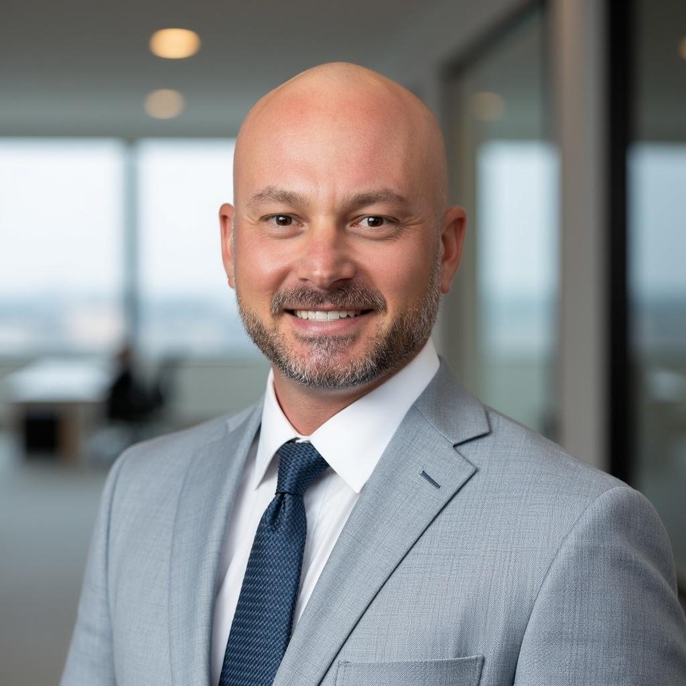

Addressing Property Damage Alongside Injuries
When a collision damages a bicycle, helmet, clothing, or electronic equipment, the owner should document each item before repairs, disposal, or replacement. Clear photographs, purchase receipts, serial numbers, repair estimates, and comparable retail listings can help establish condition and value. A review by bicycle accident lawyer atlanta may clarify which losses are recoverable and what proof an insurer is likely to request. Keep damaged items in their current condition when practical, because an inspection can be useful. Separating invoices for repairs, replacement parts, transportation, and other out-of-pocket costs also gives bicycle accident lawyer atlanta a clearer record to evaluate.
Insurance handling can create another layer of complexity. An adjuster may value a bicycle at its used-market price, apply depreciation, or rely on a limited estimate that excludes custom components and accessories. Before accepting payment, read every release carefully; a property-only check may include language that affects other rights, while a separate reservation may leave part of the loss unresolved. bicycle accident lawyer atlanta can help examine the proposed terms and compare them with documented costs. If repair is feasible, request an itemized estimate and ask whether the carrier will cover necessary parts, labor, taxes, and temporary transportation. Clear written communication with bicycle accident lawyer atlanta can reduce confusion about what has been submitted and what remains disputed.
Resolution should reflect the real financial effect of replacing or restoring essential equipment, not merely the first figure offered. Retain copies of claim forms, adjuster messages, estimates, receipts, photographs, and proof of ownership until the matter is fully closed. A careful review by bicycle accident lawyer atlanta can help identify undercounted items, unresolved reimbursement requests, or settlement language that is broader than expected. Do not sign a final release or discard damaged property until you understand what the payment covers and whether additional documentation is needed. Organized records make it easier to explain the loss and pursue a consistent outcome.

Preparing A Case Background Summary
Relevant information is easier to evaluate when it follows a consistent structure. Note when events occurred and who was involved, then separate direct observations from assumptions. A consultation with bicycle accident lawyer atlanta may help identify which facts need verification, while bicycle accident lawyer atlanta can suggest a practical way to explain complicated relationships or disputed points. Use plain language and keep conclusions separate from the information that supports them.
Supporting material is most useful when it is indexed rather than presented as an unmarked collection of files. Preserve emails, letters, agreements, account records, notices, and relevant official communications in their original form, and note when each item was created or received. bicycle accident lawyer atlanta can help assess which sources add meaningful context, while bicycle accident lawyer atlanta may identify gaps, inconsistent dates, or statements that need clarification before they are relied upon. Keep a short note explaining what each document shows and what it does not establish.
The final presentation should be concise, factual, and easy to update. Distinguish confirmed information from open questions, state the outcome being sought, and note any known deadlines or upcoming communications. Share sensitive material through a secure channel and retain a private copy of what was sent, because bicycle accident lawyer atlanta can help determine the next appropriate step as additional information becomes available.
Deciding Whether To Pursue Damages
A cycling collision can affect far more than immediate expenses, especially when missed work, altered routines, or reduced independence continue over time. A conversation with bicycle accident lawyer atlanta can place those consequences in context and explain the factors that usually shape the value of a personal injury claim. It is also wise to consider available coverage, likely out-of-pocket costs, and the time involved before responding to an insurer. Speaking with bicycle accident lawyer atlanta may be especially helpful when a quick payment is offered in exchange for a broad release.
Compensation may encompass lost wages, reduced future earning capacity, help with ordinary tasks, and the less visible effects of disrupted family or recreational life. Because these categories do not always have an obvious price, a clear explanation of how they are assessed can support realistic expectations. Input from bicycle accident lawyer atlanta can help compare a proposed resolution with the broader financial impact, while advice from bicycle accident lawyer atlanta may clarify provisions that could limit future recovery. Costs, liens, legal fees, taxes, and the length of the process should be considered together rather than in isolation.
Personal priorities matter alongside financial considerations. Someone facing pressing household needs may value certainty and speed, while another person may place greater weight on preserving the ability to seek compensation for longer-term consequences. Before signing any release, make sure its language is understood and that it addresses every category of loss under consideration. bicycle accident lawyer atlanta can explain practical tradeoffs and help identify a measured next step without promising a particular result.
VAN SANT LAW
VAN SANT LAW
307 14th St NW #100 Atlanta, GA 30318
877-708-7964